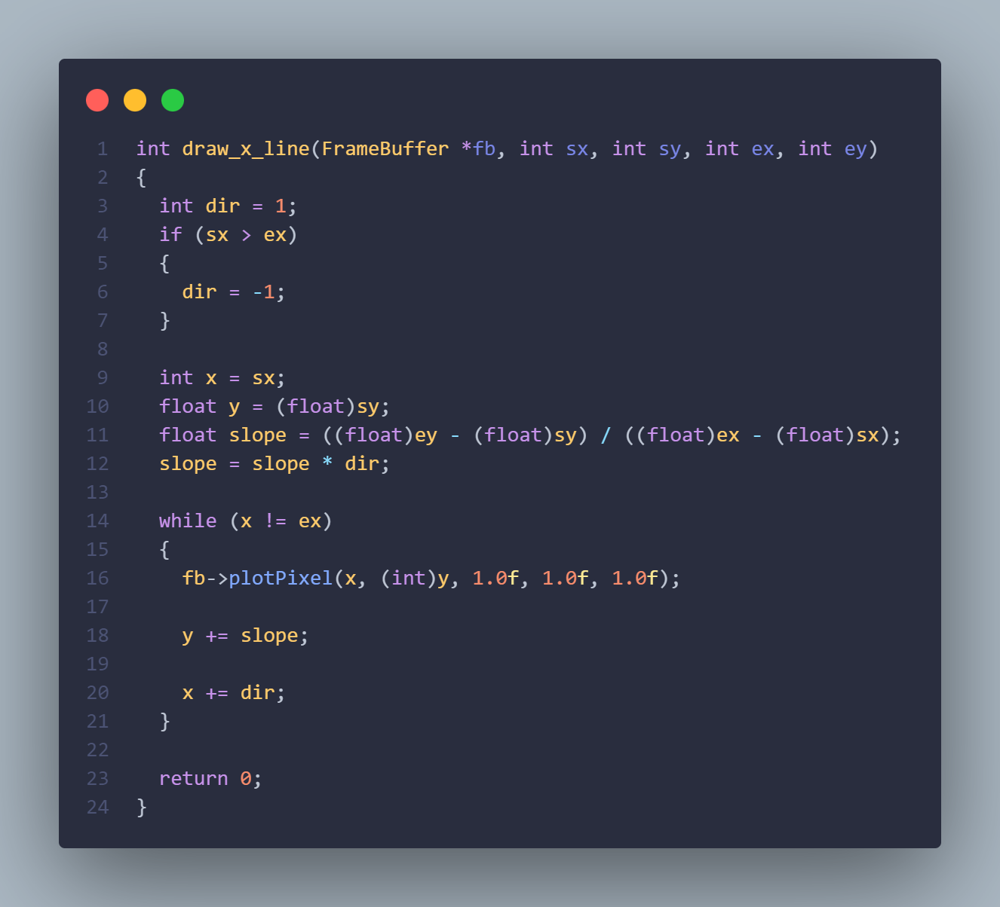
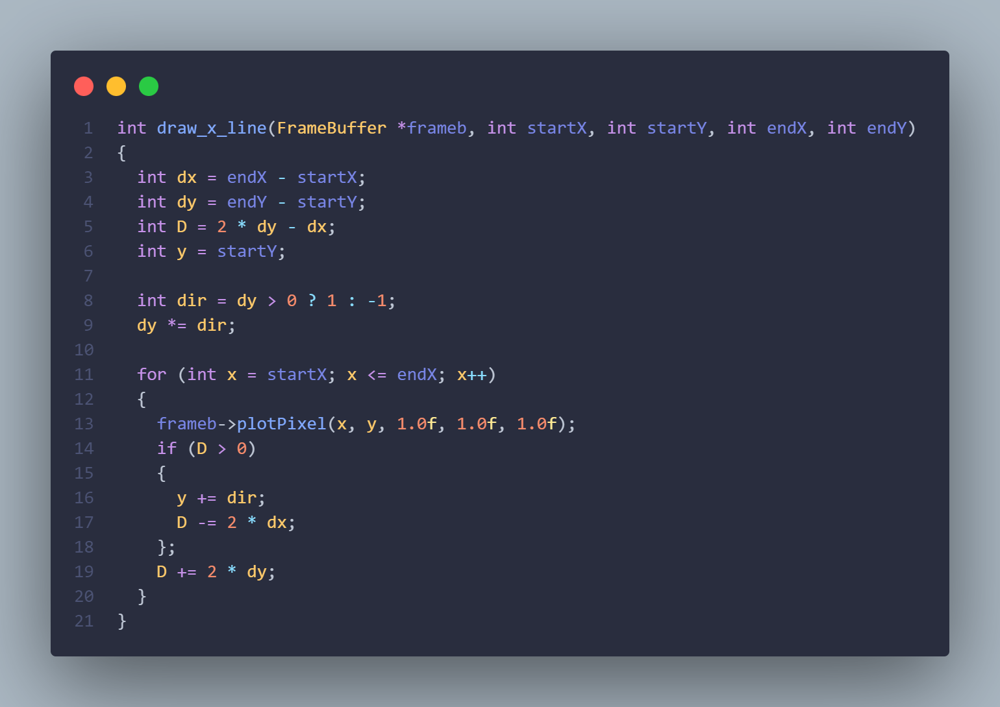
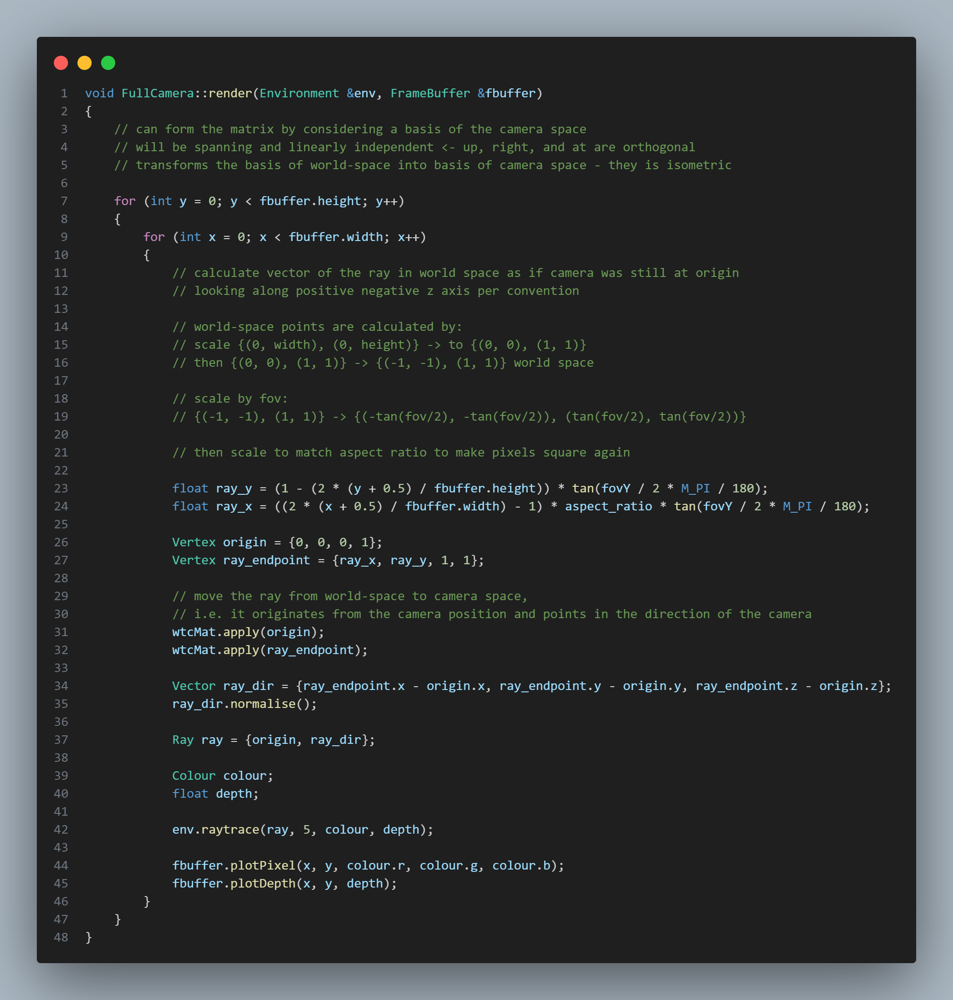
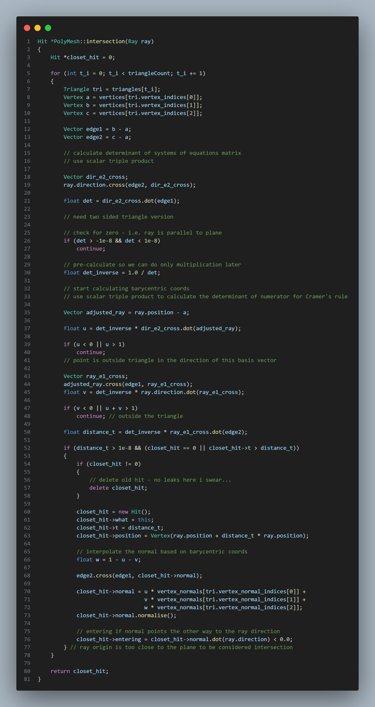
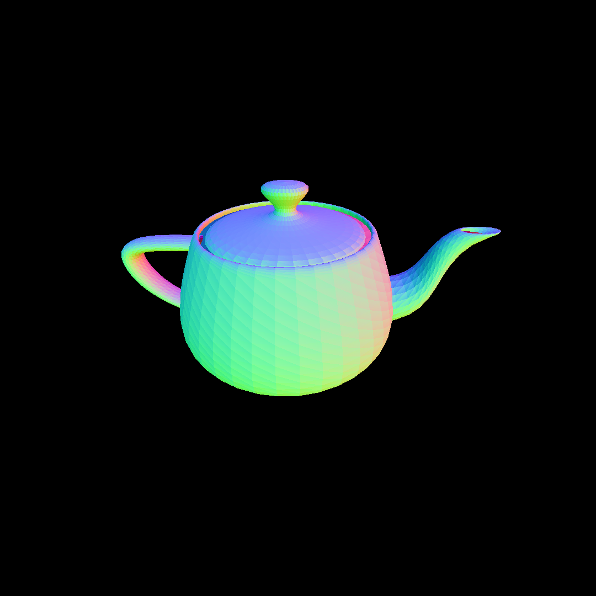

Integer Rasterisation
A graphics engine needs to be able to plot things onto the screen. To enable all of that, we need to support rasterisation.
In computer graphics, rasterisation is the task of taking an image described in a vector graphics format (shapes) and converting it into a raster image (a series of pixels, dots or lines, which, when displayed together, create the image which was represented via shapes).
Rasterisation can be implemented in a number of ways, the most obvious of which has you draw a line between two points, and then step between them from left to right by incrementing X by 1, for example. We can calculate the points' Y location by using the function of the line, and then determine whether that Y value is in the pixel above/below or right/left of the line.
The above implementation uses floats in the calculations, but when you're rending a big wiremesh there's thousands of lines, and many more calculations - integers are much more preferable. By working with the equations a little, multiplying out some denominators, we can work purely with integer maths. This is Bresenham's line algorithm.
Ray Tracing and intersection testing
Rasterisation is all well and good, but can't shine a light (pun intended...) on ray tracing and it's derivatives. The general idea - very general, as there are myriad different approaches, optimisations and algorithms that can vastly change the way all this is carried out - is that given a camera at a certain position in 3D space, you can send out rays from that origin, through the middle of a pixel on a virtual screen sat in front of the camera (think the virtual desktop screens in virtual reality) and out into the world. You can follow the path of this ray, using various linear algebra techniques to compute how that ray interacts with objects.

Most things in the scene are represented as mesh objects composed of triangles, mostly because triangles are always coplanar (all vertices lie in the same plane), and this enables one particular algorithm called the Möller–Trumbore intersection algorithm, which goes roughly as follows:
- Check first whether the ray actually intersects with the plane. The dot product can show how much two vectors share a direction. If it doesn't intersect, then we can move on.
- Start calculating the Barycentric coordinates of the intersection point of the ray in the plane. The general idea is that we move from the world-space coordinates, to triangle-space coordinates, where the origin is a vertex of the triangle and the basis vectors are the sides of the triangle. If the coefficients of the basis vectors in this new space are too large, or negative, we know the intersection lies outside the triangle.
- If the point lies in the triangle, use the Barycentric coordinates to interpolate normals or texture coordinates, as well as the length of the ray from origin to intersection. In this coordinate system its all relative to the vertices of the triangles, so this is all super computationally cheap.
Create the rays...
Trace them...
The result...
To be continued...
This is an ongoing module. I'm currently working on cleaning up photon-mapping.